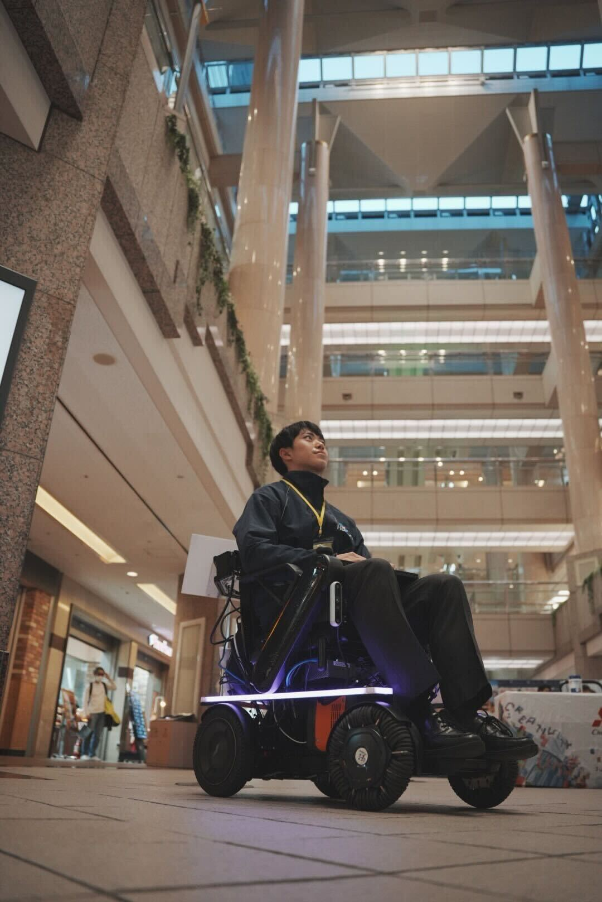
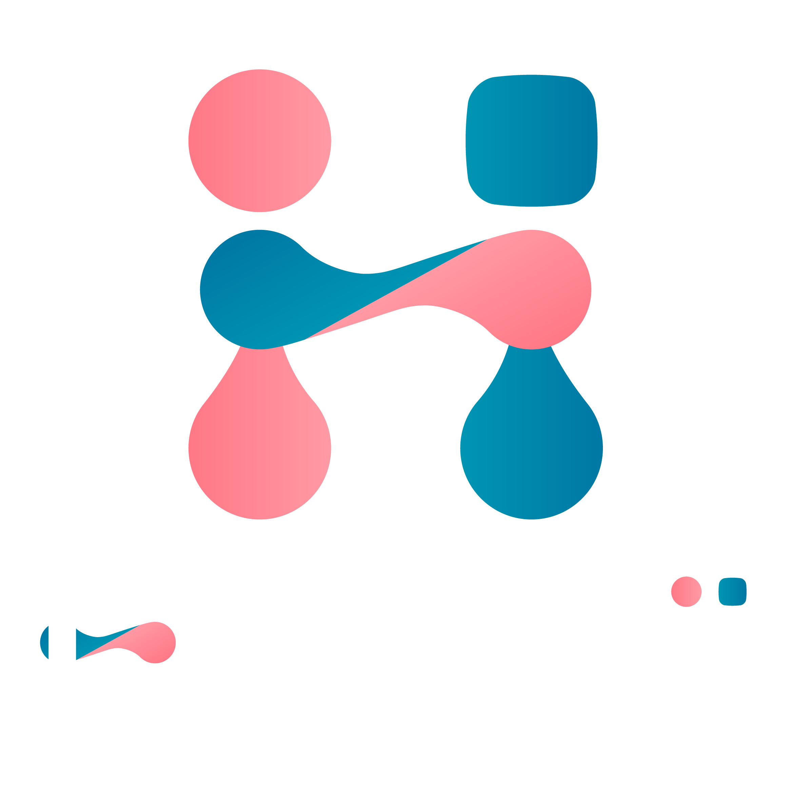
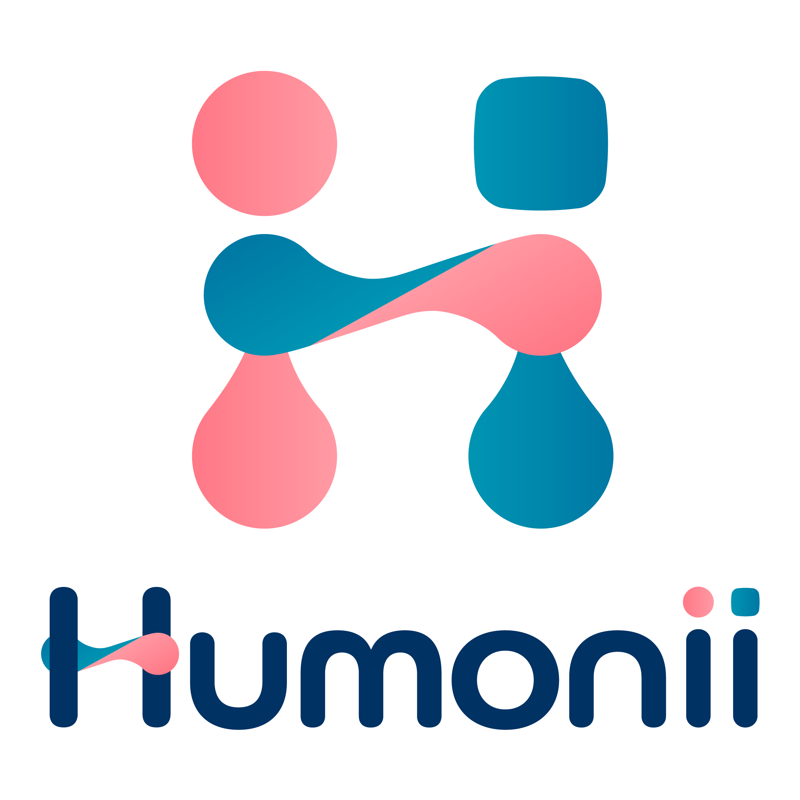

ROBOTICS RESEARCHER
Suzuki Yuma 鈴木悠真 / PhD student / 未踏AD '25 クリエーター
I explore Shared Autonomy and Motor Control, viewing assistive technologies like electric wheelchairs as a form of body augmentation. By studying how humans and machines co-adapt, I seek to unlock insights that benefit everyone—regardless of age or ability. My goal is to foster a future where humans and intelligent robots evolve together, creating a vibrant and inclusive society for all.

OUTPUT MOVIES
ギャラリー
PAPER WORKS
論文・研究発表
2025
Controllability Assessment of Belt-Type Wheelchair Interface with Individualized Asymmetry-Aware Body-Axis Calibration
＠2025 IEEE International Conference on Systems, Man, and Cybernetics
2025
ベルト型インターフェースを用いた車いすの走行性能評価
＠ロボティクス・メカトロニクス講演会 2025（ROBOMECH 2025）
2025
車いすの搭乗者行動適応型力ベース共有制御
＠ロボティクス・メカトロニクス講演会 2025（ROBOMECH 2025）
ACTIVITY HISTORY
活動実績
2026/01/16
2025/12/12
2025/11/23
2025/11/02
2025/10/17
2025/10/14
2025/10/08
2025/07/19
サマコンフェス に Feeling を出展
2025/07/16
2025年度 健康医療ベンチャー大賞 キックオフイベント に Feeling を出展
2025/07/03
2025/05/20
2025/03/05
2025/03/01
2025/01/24
2024/12/13
2024/09/05
タウンニュース港北区版 に Humonii の活動が掲載
2024/08/19
令和6年度 技術系スタートアップ実証実験等支援プログラム に Humonii が採択
2023/09/02
Mobility for ALL 2023 の実証実験に参加
2023/05/13
Mobility for ALL 2023 に Humonii が採択
PERSONAL HOBBY
APPEAL POINT
社会実装プロジェクト / Humonii


「周りと違うから」「体が思うように動かないから」と、今までできてたこと、やりたいことを諦めてきた人たちに「もっとできる！」を届けたい。年齢や障がいの有無に関わらず、誰も想像すらしなかった人間の新たな境地をも引き出せたらどんな未来が待っているだろう。体幹操作によるハンズフリー体験によって移動に留まらず活動の幅を拡張し、新しい挑戦への一歩を支えます。